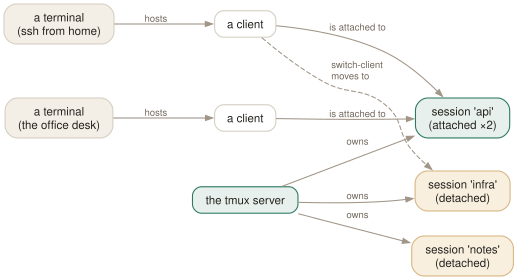

Day 06
Many sessions
One session per project, and moving between them faster than you can alt-tab.
By the end of today you can
- keep a session per project running for weeks and move between them in two keystrokes
- understand what a client is well enough to attach two, evict one, or resize sanely
- decide what happens to a session when the last client leaves
Stop putting everything in one session
By now you have windows and panes, and the natural next move is to grow main until it has eleven windows and you cannot remember which is which. The fix is not more discipline about naming. It is a second session.
A session is the unit that persists, detaches, and can be created and destroyed as a whole. That makes it the right shape for “a project”: the windows in it are all about one thing, its working directories are all in one tree, and when the work is over you kill one object rather than closing seven tabs.

Creating without leaving
The important flag is -d: create the session but do not attach to it. That lets you set up a whole environment from a script — or just from your current pane — without your screen jumping around.
$ tmux new -d -s infra -c ~/src/infra
$ tmux new -d -s notes -c ~/notes
$ tmux ls
api: 4 windows (created Mon Sep 1 08:12:44 2026) (attached)
infra: 1 windows (created Sat Sep 5 09:31:02 2026)
notes: 1 windows (created Sat Sep 5 09:31:03 2026)
Moving between them
- C-bs
- The session tree. Sessions collapsed or expanded, previews on the right, a shortcut letter on every line. x kills, t tags, f filters, M-+ and M-- expand and collapse everything.
- C-bL
- The previous session. The one you will actually use, for the same reason C-bl beat C-bn on Day 2.
- C-b( / C-b)
- Previous and next session in order. Fine with three sessions, tedious with nine.
All three run switch-client underneath. Your client never detaches — it just points somewhere else, which is why switching is instantaneous and why nothing in the old session notices.
Clients, and why you should care
A client is a terminal displaying a session. Two clients on one session is genuinely useful — a second monitor, or a colleague over ssh — and it is also where tmux's sizing rules become visible.
$ tmux lsc
/dev/pts/3: api [200x50 xterm-256color] (utf8)
/dev/pts/9: api [80x24 xterm-256color] (utf8)
By default every window is sized to the smallest client attached to its session, because anything larger could not be drawn on the small one. Three options adjust that: window-size (largest / smallest / manual / latest), aggressive-resize (only count clients actually viewing this window), and default-size (what to use when nobody is attached at all).
To take a session over from an idle client elsewhere, attach with -d: tmux attach -d -t api detaches the others first. C-bD does it interactively, showing every client with its terminal and size.
Ending a session, on purpose and by accident
Sessions die when their last window closes, or when you say so with kill-session. Two options change what happens around that:
detach-on-destroy- On by default: when your session is destroyed, your client is detached and you land back in the shell. Set it to
offand the client is moved to the most recently used remaining session instead — much nicer when you keep several around. destroy-unattached- Off by default: sessions survive with nobody watching. Turning it on makes sessions ephemeral, which defeats the point of tmux for normal use but is occasionally right for a session created by a script.
kill-session -a kills everything except the current session — the annual spring clean. has-session -t name exits 0 or 1 and prints nothing useful, which is exactly what a wrapper script wants:
$ tmux has-session -t api 2>/dev/null || tmux new -d -s api -c ~/src/api
$ tmux attach -t api
Today's habit
Split main up. Give each real project its own session, created with -c pointing at its directory, and get used to C-bL as the way back. If you find yourself with a session called misc holding nine unrelated windows, that is the signal to make another one.
New vocabulary
Keys
| Key | Does |
|---|---|
| C-bs | Choose a session from the tree — with previews, tagging and filtering. |
| C-b( | Switch this client to the previous session. |
| C-b) | Switch this client to the next session. |
| C-bL | Switch back to the last session. The C-bl of sessions. |
| C-bD | Choose a client from a list and detach it. |
| C-b$ | Rename the current session. |
Commands
| Command | Does |
|---|---|
new-session -d -s api | Create a session in the background and stay where you are. |
new-session -A -s api | Attach if it exists, create if it does not. |
new-session -c ~/src/api -s api | Create with a starting directory. |
switch-client -t api | Move this client to another session, without detaching. |
switch-client -l | Back to the previous session. |
has-session -t api | Exit 0 if it exists. The if in every wrapper script. |
attach-session -d -t api | Attach here and detach whoever else was looking. |
list-clients | Which terminals are attached to what. Alias lsc. |
detach-client -s api | Detach every client from that session. |
kill-session -a | Kill every session except the current one. |
choose-tree -Zs | The session picker behind C-bs. |
Options
| Option | Does |
|---|---|
detach-on-destroy | What a client does when its session dies. off moves it to another session instead. |
destroy-unattached | Destroy a session once the last client leaves. Off by default, and rightly. |
default-size | Size for sessions created detached, when no client dictates one. |
window-size | Whether a window sizes to the largest, smallest or latest attached client. |
aggressive-resize | Size each window to the clients actually viewing it, not the whole session. |
Today's configappend to ~/.tmux.conf
When a session is destroyed, move this client to another session instead of dumping it back to the shell. With a session per project you nearly always want to land somewhere.
set -g detach-on-destroy off
Size each window to the clients that are actually looking at it, rather than to the smallest client attached to the session. Good when a phone or a narrow ssh window is parked on some other window of the same session.
set -wg aggressive-resize on
Sessions created detached (new -d, or from a script) get a usable default size instead of 80x24, so a layout built by a script is not laid out for a 1978 terminal.
set -g default-size 200x50
Reload with tmux source-file ~/.tmux.conf and watch for errors in the status line.
Drillsdo these in a real terminal, today
Self-check
Answer out loud first, then unfold.
What is the difference between attach-session and switch-client?
attach-session is what you run from outside tmux: it takes a terminal that has no client and gives it one. switch-client is what you run from inside: your client stays alive and simply points at a different session. Confusingly, attach-session run from inside tmux does the second thing — which is why C-bs and C-b( are all built on switch-client.
Two terminals are attached to one session; one is 200 columns wide and one is 80. What size are the windows, and why?
80 columns, because window-size defaults to smallest — anything bigger could not be drawn on the small client. Set it to latest and tmux uses whichever client was last active instead, leaving the other showing a partial view it can scroll around with refresh-client -U/-D/-L/-R. aggressive-resize narrows the rule to “clients actually looking at this window”, which is the right answer when a second client is parked on a different window.
Why is “one session per project” better advice than “one window per project”?
Because a session is the unit that detaches. A project's session can be left running for weeks, attached to from home and from the office, killed as a unit when the project ends, and recreated by a script. A window has none of those properties — it is just a tab inside somebody else's context.
The practical test: when you finish with something, do you want to close four tabs or one thing? If it is one thing, it should have been a session.
You run tmux new -s api every morning and get duplicate session half the time. What is the fix, and why is it not kill-session?
tmux new -A -s api. The -A flag makes new-session behave like attach-session when the name is taken, which makes the command idempotent — safe in a shell function, a login script, or a keyboard shortcut. Killing and recreating would throw away exactly the running state you started using tmux to keep.
Cheat sheet
tmux new -d -s api -c ~/src/api # create in the background
tmux new -A -s api # attach or create — the idempotent one
tmux attach -d -t api # attach here, evict other clients
tmux ls / tmux lsc # sessions / clients
C-b s # session tree (x kills, t tags, f filters)
C-b L # last session C-b ( ) previous / next session
C-b D # choose a client and detach it
tm() { tmux new -A -s "${1:-main}" -c "$PWD"; }
Everything through Day 06
Keys
| Key | Does |
|---|---|
| C-bd | Detach this client. The session keeps running. |
| C-b$ | Rename the current session. |
| C-b? | List every key binding. q to leave. |
| C-b: | Open the tmux command prompt. |
| C-bt | Show a clock — a harmless way to prove the prefix works. |
| C-bC-b | Send a literal C-b to the program in the pane. |
| C-bc | Create a window at the lowest free index. |
| C-b, | Rename the current window — and pin the name. |
| C-bn | Next window by index. |
| C-bp | Previous window by index. |
| C-bl | Back to the last window you were in. The one to actually learn. |
| C-b0 | Jump straight to window 0 (likewise 1 … 9). |
| C-b' | Prompt for a window index — for windows above 9. |
| C-bw | Choose a window from an interactive tree with previews. |
| C-b& | Kill the current window, after a confirmation. |
| C-b. | Move the current window to a different index. |
| C-bi | Flash some information about the current window. |
| C-b% | Split left/right. The |-shaped key gives you a |-shaped border. |
| C-b" | Split top/bottom. |
| C-bLeft | Move to the pane to the left (likewise Right, Up, Down). |
| C-bo | Next pane in creation order. |
| C-b; | The previously active pane — the C-bl of panes. |
| C-bq | Flash the pane numbers; press a digit while they show to jump there. |
| C-bz | Zoom: this pane fills the window. Press again to restore. |
| C-bx | Kill this pane, after a confirmation. |
| C-bSpace | Cycle to the next preset layout. |
| C-bM-1 | even-horizontal — side by side in a row. |
| C-bM-2 | even-vertical — stacked in a column. |
| C-bM-3 | main-horizontal — one big pane on top. |
| C-bM-4 | main-vertical — one big pane on the left. |
| C-bM-5 | tiled — a grid. |
| C-bE | Spread the current pane and its neighbours out evenly. |
| C-bC-Left | Resize by one cell (hold to repeat). M-Left does five. |
| C-b{ | Swap this pane with the previous one; C-b} with the next. |
| C-bC-o | Rotate every pane through the layout; C-bM-o rotates back. |
| C-b* | Open a floating pane over the window — hovers above the layout. |
| C-b[ | Enter copy mode at the bottom of the history. |
| C-bPageUp | Enter copy mode already scrolled one page up. |
| C-b] | Paste the most recent buffer into this pane. |
| C-b= | Choose which buffer to paste, from a list with previews. |
| C-b# | List the paste buffers. |
| C-b- | Delete the most recent buffer. |
| q | In copy mode: leave. (Escape in emacs mode.) |
| /? | vi mode: search forward / backward; n and N repeat. |
| C-sC-r | emacs mode: incremental search forward / backward. |
| Space | vi mode: start a selection. C-Space in emacs mode. |
| v | vi mode: toggle rectangle (block) selection. R in emacs mode. |
| Enter | vi mode: copy the selection and leave. M-w in emacs mode. |
| gG | vi mode: top / bottom of the history. |
| C-bC | Customize mode: browse and change every option and key, with descriptions. |
| C-bR | Reload ~/.tmux.conf — after you add today's binding. |
| C-bs | Choose a session from the tree — with previews, tagging and filtering. |
| C-b( | Switch this client to the previous session. |
| C-b) | Switch this client to the next session. |
| C-bL | Switch back to the last session. The C-bl of sessions. |
| C-bD | Choose a client from a list and detach it. |
| C-b$ | Rename the current session. |
Commands
| Command | Does |
|---|---|
tmux | Start the server if needed and create a session, attached. |
tmux new -s work | Create a session named work. |
tmux new -A -s work | Attach to work, creating it only if absent. |
tmux ls | List sessions on this server. Alias for list-sessions. |
tmux attach -t work | Attach this terminal to work. |
tmux attach -d -t work | Attach, detaching any other client first. |
tmux detach | Detach the current client, from inside or by target. |
tmux rename-session api | Rename the current session. |
tmux kill-session -t work | Destroy a session and everything in it. |
tmux kill-server | Destroy every session. The nuclear option. |
new-window | Create a window. Alias neww. |
new-window -n logs | Create it with a fixed name. |
new-window -c ~/src/api | Create it with that working directory. |
new-window -d | Create it but do not switch to it. |
new-window -a -t 2 | Insert after window 2, shifting the rest along. |
rename-window api | Rename the current window. |
select-window -t :3 | Switch to window 3 of the current session. |
last-window | Switch to the previously current window. |
kill-window -t :logs | Kill a window by name. |
list-windows | List windows in the session. Alias lsw. |
choose-tree -w | The interactive picker behind C-bw. |
split-window -h | Split left/right. Alias splitw. |
split-window -v | Split top/bottom. The default if neither is given. |
split-window -c ~/src | Start the new pane in that directory. |
split-window -l 30% | Give the new pane 30% of the space (-l 20 for cells). |
split-window -b | Put the new pane before — above or to the left of — the old one. |
split-window -f -h | Split the full window height, not just the current pane. |
select-pane -L | Move to the pane on the left (-R -U -D likewise). |
select-pane -t 2 | Move to pane 2 of this window. |
last-pane | Back to the previously active pane. |
resize-pane -Z | Toggle zoom. |
resize-pane -x 100 -y 30 | Resize to an absolute size, cells or %. |
select-layout tiled | Apply a named layout. |
select-layout -E | Spread evenly (what C-bE runs). |
select-layout -o | Undo the most recent layout change. |
list-panes | List panes with index, size and command. Alias lsp. |
kill-pane -a | Kill every pane except this one. |
swap-pane -D | Swap with the next pane, keeping focus behaviour sane. |
copy-mode | Enter copy mode; -u starts a page up, -e exits at the bottom. |
send-keys -X begin-selection | How every copy-mode key is implemented. -X means “to the mode”. |
list-buffers | Show the buffer stack. Alias lsb. |
set-buffer "text" | Put a literal string into a buffer from a script. |
load-buffer file | Read a file into a buffer (- for stdin). |
save-buffer file | Write a buffer out to a file (- for stdout). |
show-buffer | Print the newest buffer. |
paste-buffer -t :1.0 | Paste into a specific pane, not necessarily this one. |
delete-buffer -b name | Remove one buffer. |
capture-pane -p -S -3000 | Dump the last 3000 lines of history to stdout. |
clear-history | Throw away a pane's scrollback. Alias clearhist. |
set-option -g name value | Set a global session option. Alias set. |
set-option -w name value | Set a window option (for the current window). |
set-option -p name value | Set a pane option (for the current pane). |
set-option -s name value | Set a server option. |
set-option -u name | Unset, so the value is inherited again. |
set-option -a name value | Append to a string or style option instead of replacing it. |
show-options -g | Show global session options. Alias show. |
show-options -A | Show them including inherited values, marked with *. |
show-options -gv history-limit | Print just the value of one option. |
source-file ~/.tmux.conf | Run a file of tmux commands now. Alias source. |
customize-mode | The interactive option browser behind C-bC. |
new-session -d -s api | Create a session in the background and stay where you are. |
new-session -A -s api | Attach if it exists, create if it does not. |
new-session -c ~/src/api -s api | Create with a starting directory. |
switch-client -t api | Move this client to another session, without detaching. |
switch-client -l | Back to the previous session. |
has-session -t api | Exit 0 if it exists. The if in every wrapper script. |
attach-session -d -t api | Attach here and detach whoever else was looking. |
list-clients | Which terminals are attached to what. Alias lsc. |
detach-client -s api | Detach every client from that session. |
kill-session -a | Kill every session except the current one. |
choose-tree -Zs | The session picker behind C-bs. |
Options
| Option | Does |
|---|---|
automatic-rename | Window renames itself after the running command. On by default. |
automatic-rename-format | The format used when it does. Defaults to the pane's command. |
allow-rename | Whether a program in the pane may rename the window by escape sequence. |
main-pane-width | Width of the big pane in the main-vertical layouts. Accepts %. |
main-pane-height | Height of the big pane in the main-horizontal layouts. |
tiled-layout-max-columns | Cap the columns in the tiled layout; 0 means no cap. |
mode-keys | vi or emacs key bindings inside copy mode. Default emacs. |
history-limit | Lines of scrollback kept per pane. Default 2000, which is stingy. |
copy-command | Shell command that bare copy-pipe pipes to — your clipboard tool. |
set-clipboard | Whether tmux sets the terminal's clipboard with OSC 52. |
word-separators | What counts as a word boundary for w and b. |
wrap-search | Whether searches wrap around the end of the history. On by default. |
base-index | Index the first window gets. Default 0. |
pane-base-index | Index the first pane gets. Default 0. A window option. |
renumber-windows | Close the gaps in window indices when one is killed. |
escape-time | Milliseconds tmux waits to decide whether Escape began a key sequence. |
focus-events | Pass terminal focus in/out through to the programs in panes. |
display-time | How long status line messages stay up. 750 ms by default. |
default-terminal | The $TERM new panes get. Must be a screen/tmux derivative. |
detach-on-destroy | What a client does when its session dies. off moves it to another session instead. |
destroy-unattached | Destroy a session once the last client leaves. Off by default, and rightly. |
default-size | Size for sessions created detached, when no client dictates one. |
window-size | Whether a window sizes to the largest, smallest or latest attached client. |
aggressive-resize | Size each window to the clients actually viewing it, not the whole session. |